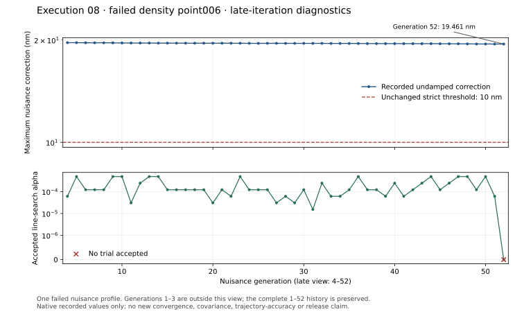

Execution08 completed with failed required scientific gates. All 106 original native tests, 40 separate correction regressions and four refinements passed. Both objective checks and the second original nuisance replay failed. The first original replay reached strict convergence. Independent audit agrees; no covariance or release readiness is authorized.
These are two distinct executions of frozen source 8e4d36f using unchanged candidate07 controls. Attempt07 failed before any build/test because its upstream mirror was missing. Attempt08 staged that mirror independently and ran the full prescribed suite. The original v3 campaign and 150-attempt benchmark remain separate.
| Check | Execution08 result |
|---|---|
| Original native suite / separate correction regressions | 106 / 40 passed; zero failures, errors or skips |
| Synthetic density and pulses, flight window, eccentric 24h refinement | All four passed |
| Full nonzero OU / pulse priors | Passed; 61 / 6 rows |
| Density objective | Failed point006, generation52; 19.4608nm undamped correction |
| Pulse objective | Failed point003, generation80; 17.7419nm undamped correction |
| First original nuisance replay | Strict convergence; 0.299056nm |
| Second original nuisance replay | Failed generation14; 32.5119nm |
The unchanged nuisance threshold is 10 nm. Neither objective completed a directional-derivative scale. Both final objective profiles rejected all 17 trials; none of these failures received an accepted numerical-floor qualification. Small earlier steps and passing prior checks do not establish convergence.
This plot shows density point006 generations 4–52 only. The complete 1–52 history is linked above. The update remains above the unchanged strict threshold while accepted line-search steps become small. The plot summarizes recorded fields and does not decide convergence.

PNG · CSV · Exact 49 input hashes · Plot provenance
Owned-process cleanup was verified. The original report collector failed its unchanged file-size limit; that failure remains recorded. This bounded presentation preserves full compressed reports with original and transformed hashes. It does not alter frozen controls, numerical limits or scientific statuses. Row spools, binary factors and bulky datasets remain outside Git.